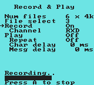

|
Record and Play
|
|||||||||
| This page is used to record serial data into flash memory and to transmit the recorded data at a later time. This feature can be used to send recorded commands or message strings to a unit under test or development. The Record feature is only available on DataBoy Plus. Standard DataBoy cannot record data, but it can transmit a single, pre-recorded, fixed test message designated as File 0.
This page contains eight software switches. Navigate the screen by moving the cursor with the Up and Down Arrow keys. Change switch selections with the Right Arrow key. Note: Prior to entering this page, set the serial communication parameters using the Setup Page. Configuring flash memory A total of 24 KBytes of flash memory is available for recording data. By setting the Num files switch, this memory can be configured into 1, 2, 3, or 6 files:
In the example of Figure 1 (below), the flash has been divided into 6 files of 4KB each. Note: Changing the number of files will cause all recorded data to be erased. A warning message will be displayed if the user attempts to change Num files. |
|||||||||
|
Recording data
At this point DataBoy will begin monitoring the selected serial channel and will record received data into memory. A horizontal progress bar near the bottom of the screen will indicate how much data has been recorded. In Figure 1 the progress bar indicates that File 3 is slightly more than half full. Recording will stop when the file is full or the user presses the ‘A’ key. Playing back recorded data
At this point DataBoy will begin transmitting characters from the selected file. As data is transmitted, a horizontal progress bar near the bottom of the screen will be updated. Pressing the ‘A’ key will terminate transmission. If multi-drop mode is enabled, any characters recorded with the parity bit set, will be transmitted with the parity bit set. Thus, the 9th bit in a 9-bit protocol is preserved. |
|||||||||
|  | |||||||||
| Figure 1. Recording serial data. | |||||||||
 |
|||||||||
| Figure 2. Playing back recorded data. | |||||||||
| Note: These screenshot were made using the NO$GMB Game Boy emulator. | |||||||||